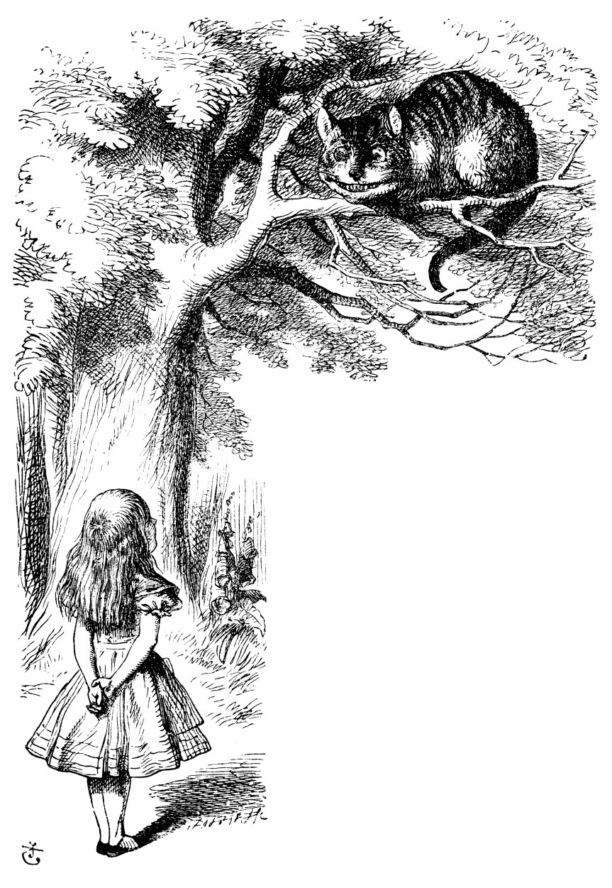

Setting up the R packages
knitr::opts_chunk$set(message = FALSE)
library(tidyverse)
## ── Attaching core tidyverse packages ──────────────────────── tidyverse 2.0.0 ──
## ✔ dplyr 1.1.4 ✔ readr 2.1.4
## ✔ forcats 1.0.0 ✔ stringr 1.5.1
## ✔ ggplot2 3.4.4 ✔ tibble 3.2.1
## ✔ lubridate 1.9.3 ✔ tidyr 1.3.0
## ✔ purrr 1.0.2
## ── Conflicts ────────────────────────────────────────── tidyverse_conflicts() ──
## ✖ dplyr::filter() masks stats::filter()
## ✖ dplyr::lag() masks stats::lag()
## ℹ Use the conflicted package (<http://conflicted.r-lib.org/>) to force all conflicts to become errors
library(janitor)
##
## Attaching package: 'janitor'
##
## The following objects are masked from 'package:stats':
##
## chisq.test, fisher.test
library(fs)
library(tidystringdist)
library(gapminder)
library(ggformula)
## Loading required package: scales
##
## Attaching package: 'scales'
##
## The following object is masked from 'package:purrr':
##
## discard
##
## The following object is masked from 'package:readr':
##
## col_factor
##
## Loading required package: ggridges
##
## New to ggformula? Try the tutorials:
## learnr::run_tutorial("introduction", package = "ggformula")
## learnr::run_tutorial("refining", package = "ggformula")

Introduction
Often we want to perform the same operation on several different sets of
data. Rather than repeat the operation for each instance of data, it is
faster, more intuitive, and less error-prone if we create a data
structure that holds all the data, and use the map-* series functions
from the purrr package to perform all the repeated operations in one
shot.
This requires getting used to. We need to understand: - the data
structure - the iteration mechanism using map functions - the form of
the results
Case Study #1: Multiple Models for Life Expectancy with gapminder
We will start with a complete case study and then work backwards to
understand the various pieces of code that make it up.
Let us look at the gapminder dataset:
skimr::skim(gapminder)
Table 1: Data summary
| Name |
gapminder |
| Number of rows |
1704 |
| Number of columns |
6 |
| _______________________ |
|
| Column type frequency: |
|
| factor |
2 |
| numeric |
4 |
| ________________________ |
|
| Group variables |
None |
Variable type: factor
| country |
0 |
1 |
FALSE |
142 |
Afg: 12, Alb: 12, Alg: 12, Ang: 12 |
| continent |
0 |
1 |
FALSE |
5 |
Afr: 624, Asi: 396, Eur: 360, Ame: 300 |
Variable type: numeric
| year |
0 |
1 |
1979.50 |
17.27 |
1952.00 |
1965.75 |
1979.50 |
1993.25 |
2007.0 |
▇▅▅▅▇ |
| lifeExp |
0 |
1 |
59.47 |
12.92 |
23.60 |
48.20 |
60.71 |
70.85 |
82.6 |
▁▆▇▇▇ |
| pop |
0 |
1 |
29601212.32 |
106157896.74 |
60011.00 |
2793664.00 |
7023595.50 |
19585221.75 |
1318683096.0 |
▇▁▁▁▁ |
| gdpPercap |
0 |
1 |
7215.33 |
9857.45 |
241.17 |
1202.06 |
3531.85 |
9325.46 |
113523.1 |
▇▁▁▁▁ |
We have lifeExp, gdpPerCap, and pop as Quant variables over time
(year) for each country in the world. Suppose now that we wish to
create Linear Regression Models predicting lifeExp using year,
gdpPercap and pop for each country. The straightforward by
labourious and naive way would be to use the lm command after
filtering the dataset for each country, creating 140+ Linear Models
manually! This would be horribly tedious!
There is a better way with purrr, and also more recently, with dplyr
itself. Let us see both methods, the established purrr method first,
and the new dplyr based method thereafter.
EDA Plots
We can first plot lifeExp over year, grouped by country:
ggplot(gapminder,aes(x = year, y = lifeExp, colour = country)) +
geom_line(show.legend = FALSE) +
theme_classic()

ggplot(gapminder,aes(x = year, y = lifeExp, colour = country)) +
geom_line(show.legend = FALSE) +
facet_wrap(~ continent) +
theme_classic()

Constructing a Linear Model:
model <- lm(lifeExp ~ year, data = gapminder)
summary(model)
##
## Call:
## lm(formula = lifeExp ~ year, data = gapminder)
##
## Residuals:
## Min 1Q Median 3Q Max
## -39.949 -9.651 1.697 10.335 22.158
##
## Coefficients:
## Estimate Std. Error t value Pr(>|t|)
## (Intercept) -585.65219 32.31396 -18.12 <2e-16 ***
## year 0.32590 0.01632 19.96 <2e-16 ***
## ---
## Signif. codes: 0 '***' 0.001 '**' 0.01 '*' 0.05 '.' 0.1 ' ' 1
##
## Residual standard error: 11.63 on 1702 degrees of freedom
## Multiple R-squared: 0.1898, Adjusted R-squared: 0.1893
## F-statistic: 398.6 on 1 and 1702 DF, p-value: < 2.2e-16
model %>% broom::tidy() # Parameters of the Model
## # A tibble: 2 × 5
## term estimate std.error statistic p.value
## <chr> <dbl> <dbl> <dbl> <dbl>
## 1 (Intercept) -586. 32.3 -18.1 2.90e-67
## 2 year 0.326 0.0163 20.0 7.55e-80
model %>% broom::glance() # Statistics of the Model
## # A tibble: 1 × 12
## r.squared adj.r.squared sigma statistic p.value df logLik AIC BIC
## <dbl> <dbl> <dbl> <dbl> <dbl> <dbl> <dbl> <dbl> <dbl>
## 1 0.190 0.189 11.6 399. 7.55e-80 1 -6598. 13202. 13218.
## # ℹ 3 more variables: deviance <dbl>, df.residual <int>, nobs <int>
Since the slope 0.3259038 is positive, life expectancy
has been increasing over the years. How do we do this for each country?
We need to use the split-apply-combine method to achieve this.
The combination of group_by and summarise is a example of the
split > apply > combine method. For example, we could (split) the data
by country, calculate the linear model each group (apply), and (combine)
the results in a data frame.
However, this first-attempt code for a per-country linear model does not
work:
gapminder %>%
group_by(country) %>%
summarise(linmod = lm(lifeExp ~ year, data = .))
This is because the linmod variable is a list variable and cannot
be accommodated in a simple column, which is what summarize will try
to create.
Counter-intuitively, we do need to be able to create “list” columns
in a data frame! The purrr package contains a new class of functions,
that can take vectors/tibbles/lists as input, and perform an identical
function over each component of these, and generate a
vectors/tibbles/lists as output. These are the map_* functions that
are part of the purrr package. The * in the map_* function defines
what kind of output (vector/tibble/list) the function generates. Let
us look at a few short examples.
Using map_* functions from purrr
The basic structure of the map_* functions is:
map_typeOfResult(.x = what_to_iterate_with,
.f = function_to_apply)
map_typeOfResult(.x = what_to_iterate_with,
.f = \(x) function_to_apply(x, additional_parameters))
Two examples:
# Example 1
diamonds %>%
select(where(is.numeric)) %>%
# We need dbl-type numbers in output **vector**
map_dbl(.x = .,
.f = mean)
## carat depth table price x y
## 0.7979397 61.7494049 57.4571839 3932.7997219 5.7311572 5.7345260
## z
## 3.5387338
diamonds %>%
select(where(is.numeric)) %>%
# We need dbl-type numbers in output **vector**
map_df(.x = .,
.f = mean)
## # A tibble: 1 × 7
## carat depth table price x y z
## <dbl> <dbl> <dbl> <dbl> <dbl> <dbl> <dbl>
## 1 0.798 61.7 57.5 3933. 5.73 5.73 3.54
Sometimes the function .f may need some additional parameters to be
specified, and these may not come from the .x:
# Example 3, with additional parameters to .f
palmerpenguins::penguins %>%
select(where(is.numeric)) %>%
map_dbl(.x = .,
.f = \(x) mean(x,
# penguins has two rows of NA entries which need to be dropped
# Hence this additional parameter for the `mean` function
na.rm = TRUE))
## bill_length_mm bill_depth_mm flipper_length_mm body_mass_g
## 43.92193 17.15117 200.91520 4201.75439
## year
## 2008.02907
# Example 4: if we want a tibble output
palmerpenguins::penguins %>%
select(where(is.numeric)) %>%
map_df(.x = .,
.f = \(x) mean(x,
# penguins has two rows of NA entries which need to be dropped
# Hence this additional parameter for the `mean` function
na.rm = TRUE))
## # A tibble: 1 × 5
## bill_length_mm bill_depth_mm flipper_length_mm body_mass_g year
## <dbl> <dbl> <dbl> <dbl> <dbl>
## 1 43.9 17.2 201. 4202. 2008.
The .f function can be anything, even a ggformula plot command; in
this case the output will not be a vector or a tibble, but a list:
#library(ggformula)
palmerpenguins::penguins %>%
select(where(is.numeric)) %>% select(-year) %>% drop_na() %>%
# `map` gives a list output
map(.x = .,
.f = \(x) gf_histogram(~x, bins = 30) %>%
gf_refine(theme_classic())
)
## $bill_length_mm

##
## $bill_depth_mm

##
## $flipper_length_mm

##
## $body_mass_g

Note: we need to do just a bit of extra pre-work to get the variable
names on the x-axis of the histograms.
So in summary, we need to create a tibble with column(s) that are the
inputs to the map function. We then provide map with a function that
it will apply to each of these columns. The function can take additional
parameters too. Finally, depending upon the kind of output the function
generates, we need to choose the map function.
Using purrr to create multiple models
Now that we have some handle on purrr’s map functions, we can see how
to develop a linear regression model for every country in the
gapminder dataset.
Here is the process:
- Group the data by
country
- Create a
nested column of data for each country (i.e nest the
columns other than country into a list column). This list
column is the first argument .x formap_*.
- Use
map to create an lm object for each country (in another list
column)
- Use
map again with broom::tidy as the function to give us clean
columns for the model per country.
- Use that multi-model tibble to plot graphs for each country
- Etc.
Let us do this now!
gapminder_models <- gapminder %>%
group_by(country) %>%
nest(.key = "list") %>% # Name the column as "list"
# We use mutate + map to add a list column containing linear models
mutate(model = map(.x = list,
# One column to iterate over
# The list column contains data frames
# So we access individual columns
# within these individual data frames
.f = \(.x) lm(lifeExp ~ year, data = .x)
)) %>%
# Use mutate + map again to expose the columns of the models
mutate(model_params = map(.x = model,
.f = \(.x) broom::tidy(.x,
conf.int = TRUE,
conf.lvel = 0.95)),
model_metrics = map(.x = model,
.f = \(x) broom::glance(x)))
gapminder_models
## # A tibble: 142 × 5
## # Groups: country [142]
## country list model model_params model_metrics
## <fct> <list> <list> <list> <list>
## 1 Afghanistan <tibble [12 × 5]> <lm> <tibble [2 × 7]> <tibble [1 × 12]>
## 2 Albania <tibble [12 × 5]> <lm> <tibble [2 × 7]> <tibble [1 × 12]>
## 3 Algeria <tibble [12 × 5]> <lm> <tibble [2 × 7]> <tibble [1 × 12]>
## 4 Angola <tibble [12 × 5]> <lm> <tibble [2 × 7]> <tibble [1 × 12]>
## 5 Argentina <tibble [12 × 5]> <lm> <tibble [2 × 7]> <tibble [1 × 12]>
## 6 Australia <tibble [12 × 5]> <lm> <tibble [2 × 7]> <tibble [1 × 12]>
## 7 Austria <tibble [12 × 5]> <lm> <tibble [2 × 7]> <tibble [1 × 12]>
## 8 Bahrain <tibble [12 × 5]> <lm> <tibble [2 × 7]> <tibble [1 × 12]>
## 9 Bangladesh <tibble [12 × 5]> <lm> <tibble [2 × 7]> <tibble [1 × 12]>
## 10 Belgium <tibble [12 × 5]> <lm> <tibble [2 × 7]> <tibble [1 × 12]>
## # ℹ 132 more rows
params <- gapminder_models %>%
select(country,model_params, model_metrics) %>%
ungroup() %>%
# Now unpack the linear model parameters into columns
unnest(cols = model_params)
metrics <- gapminder_models %>%
select(country,model_metrics) %>%
ungroup() %>%
# Now unpack the linear model parameters into columns
unnest(cols = model_metrics)
params
## # A tibble: 284 × 9
## country term estimate std.error statistic p.value conf.low conf.high
## <fct> <chr> <dbl> <dbl> <dbl> <dbl> <dbl> <dbl>
## 1 Afghanistan (Interc… -5.08e+2 40.5 -12.5 1.93e- 7 -5.98e+2 -417.
## 2 Afghanistan year 2.75e-1 0.0205 13.5 9.84e- 8 2.30e-1 0.321
## 3 Albania (Interc… -5.94e+2 65.7 -9.05 3.94e- 6 -7.40e+2 -448.
## 4 Albania year 3.35e-1 0.0332 10.1 1.46e- 6 2.61e-1 0.409
## 5 Algeria (Interc… -1.07e+3 43.8 -24.4 3.07e-10 -1.17e+3 -970.
## 6 Algeria year 5.69e-1 0.0221 25.7 1.81e-10 5.20e-1 0.619
## 7 Angola (Interc… -3.77e+2 46.6 -8.08 1.08e- 5 -4.80e+2 -273.
## 8 Angola year 2.09e-1 0.0235 8.90 4.59e- 6 1.57e-1 0.262
## 9 Argentina (Interc… -3.90e+2 9.68 -40.3 2.14e-12 -4.11e+2 -368.
## 10 Argentina year 2.32e-1 0.00489 47.4 4.22e-13 2.21e-1 0.243
## # ℹ 274 more rows
## # ℹ 1 more variable: model_metrics <list>
metrics
## # A tibble: 142 × 13
## country r.squared adj.r.squared sigma statistic p.value df logLik AIC
## <fct> <dbl> <dbl> <dbl> <dbl> <dbl> <dbl> <dbl> <dbl>
## 1 Afghanis… 0.948 0.942 1.22 181. 9.84e- 8 1 -18.3 42.7
## 2 Albania 0.911 0.902 1.98 102. 1.46e- 6 1 -24.1 54.3
## 3 Algeria 0.985 0.984 1.32 662. 1.81e-10 1 -19.3 44.6
## 4 Angola 0.888 0.877 1.41 79.1 4.59e- 6 1 -20.0 46.1
## 5 Argentina 0.996 0.995 0.292 2246. 4.22e-13 1 -1.17 8.35
## 6 Australia 0.980 0.978 0.621 481. 8.67e-10 1 -10.2 26.4
## 7 Austria 0.992 0.991 0.407 1261. 7.44e-12 1 -5.16 16.3
## 8 Bahrain 0.967 0.963 1.64 291. 1.02e- 8 1 -21.9 49.7
## 9 Banglade… 0.989 0.988 0.977 930. 3.37e-11 1 -15.7 37.3
## 10 Belgium 0.995 0.994 0.293 1822. 1.20e-12 1 -1.20 8.40
## # ℹ 132 more rows
## # ℹ 4 more variables: BIC <dbl>, deviance <dbl>, df.residual <int>, nobs <int>
We can now plot these models and their uncertainty (i.e Confidence
Intervals). We can select a few of the countries and plot:
params %>%
filter(country %in% c("India", "United States", "Brazil", "China"), term == "year") %>%
gf_errorbar(conf.high + conf.low ~ country,
color = ~ -log10(p.value),
linewidth = ~ -log10(p.value), width = 0.3,
ylab = "Effect Size", title = "Effect of years on Life Expectancy") %>%
gf_theme(theme_classic()) %>%
gf_refine(scale_color_viridis_c("significance"), scale_linewidth_continuous("significance", range = c(0.2,3)))

We can look at the model metrics and see for which countries the model
fares the worst. We will reverse sort on r.squared and choose the 5
worst models:
metrics %>% slice_min(order_by = r.squared, n = 5)
## # A tibble: 5 × 13
## country r.squared adj.r.squared sigma statistic p.value df logLik AIC
## <fct> <dbl> <dbl> <dbl> <dbl> <dbl> <dbl> <dbl> <dbl>
## 1 Rwanda 0.0172 -0.0811 6.56 0.175 0.685 1 -38.5 83.0
## 2 Botswana 0.0340 -0.0626 6.11 0.352 0.566 1 -37.7 81.3
## 3 Zimbabwe 0.0562 -0.0381 7.21 0.596 0.458 1 -39.6 85.3
## 4 Zambia 0.0598 -0.0342 4.53 0.636 0.444 1 -34.1 74.1
## 5 Swaziland 0.0682 -0.0250 6.64 0.732 0.412 1 -38.7 83.3
## # ℹ 4 more variables: BIC <dbl>, deviance <dbl>, df.residual <int>, nobs <int>
We see that for a few African countries, the linear model for Life
Expectancy fails. There are of course political reasons for
this: genocide in Rwanda, and hyper-inflation in Zimbabwe.
Recent developments in dplyr
In recent times, the familiar dplyr package also has experimental
functions that are syntactically easier and offer pretty much
purrr-like capability, and without introducing the complexity of the
list columns or list output.
Look the code below and decipher how it works:
# Using group_modify
gapminder_model_dplyr <- gapminder %>%
group_by(continent, country) %>%
dplyr::group_modify(
.data = .,
.f = ~ lm(lifeExp ~ year, data = .) %>%
# glance/tidy is part of the group_map's .f variable.
# Applies to each model
# .f MUST generate a tibble here and *not* a list
# Hence broom::tidy is essential!
broom::glance(conf.int = TRUE, # try `tidy()` and `augment()`
conf.lvel = 0.95)) %>%
# We already have a grouped tibble from `group_modify()`
# Just ungroup()
ungroup()
gapminder_model_dplyr
## # A tibble: 142 × 14
## continent country r.squared adj.r.squared sigma statistic p.value df
## <fct> <fct> <dbl> <dbl> <dbl> <dbl> <dbl> <dbl>
## 1 Africa Algeria 0.985 0.984 1.32 662. 1.81e-10 1
## 2 Africa Angola 0.888 0.877 1.41 79.1 4.59e- 6 1
## 3 Africa Benin 0.967 0.963 1.17 289. 1.04e- 8 1
## 4 Africa Botswana 0.0340 -0.0626 6.11 0.352 5.66e- 1 1
## 5 Africa Burkina Faso 0.919 0.911 2.05 113. 9.05e- 7 1
## 6 Africa Burundi 0.766 0.743 1.61 32.7 1.93e- 4 1
## 7 Africa Cameroon 0.680 0.648 3.24 21.3 9.63e- 4 1
## 8 Africa Central Afr… 0.493 0.443 3.52 9.73 1.09e- 2 1
## 9 Africa Chad 0.872 0.860 1.83 68.4 8.82e- 6 1
## 10 Africa Comoros 0.997 0.997 0.479 3165. 7.63e-14 1
## # ℹ 132 more rows
## # ℹ 6 more variables: logLik <dbl>, AIC <dbl>, BIC <dbl>, deviance <dbl>,
## # df.residual <int>, nobs <int>
There is no nesting and unnesting; the data is the familiar tibble
throughout! This seems like a simple and elegant method.
Using dplyr::group_modify
Note: group_modify is new experimental functions in dplyr, as is
list_rbind. The second-named requires that the operation in .f
generates a tibble, not a list, and we can retain the grouping
variable easily too. We can remove the groups with ungroup.
group_modify() looks very clear and crisp, in my opinion. And very
learner-friendly!
Conclusion
We have seen how purrr simplifies the application of functions
iteratively to large groups of data, in a faster, replicable, and less
error-prone manner.